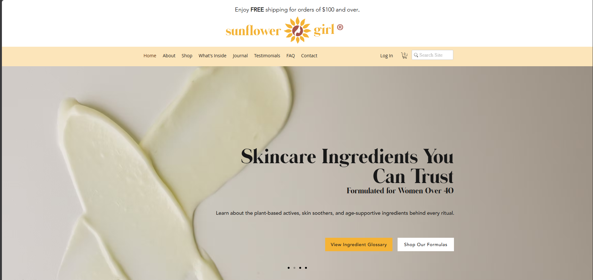
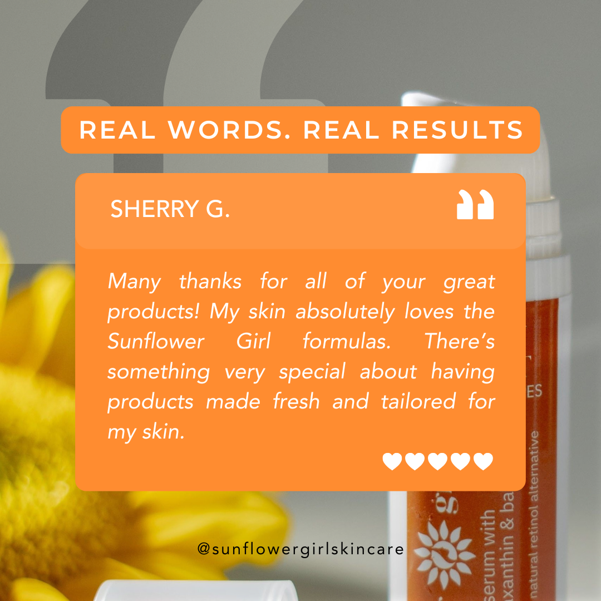

Sunflower Girl — brand ecosystem rebuild
Website redesign, CRM restructuring, and ongoing content operations for a botanical skincare brand serving women 40+ — turning a disconnected setup into one cohesive, premium-feeling system.

THE CHALLENGE
Sunflower Girl's products were premium and intentional — but the site, CRM, and content didn't reflect that. Branding was inconsistent across channels, CRM tagging was messy, and there was no repeatable process for keeping content on-brand week to week.
THE APPROACH
-
01
Website redesign
Rebuilt the site to match the brand's premium, botanical identity and improve conversion paths.
-
02
CRM restructuring
Cleaned up tagging and automations so customer data actually supported marketing decisions.
-
03
Content system
Set up a repeatable content and social process to keep output consistent and on-brand.
THE WORK, IN SCREENSHOTS
GRAPHICS & VIDEO SAMPLES



THE RESULT
A single, cohesive system — site, CRM, and content working from the same playbook instead of three disconnected efforts.
CLIENT FEEDBACK
“During his time with my company, he played an important role in both creative and technical aspects of the business. He reworked and maintained our website, managed our social media presence on Facebook and Instagram, and handled social media content creation, including visuals and copywriting. Oliver also supported various technical initiatives, including implementing tools such as ManyChat and other applications to improve workflow and automation. In addition to this, he contributed to graphic design and video editing projects as needed. He managed his time efficiently, followed directions carefully, and was consistently receptive to feedback. Communication was clear and dependable, which made collaboration smooth and productive. Beyond his skills, Oliver was a pleasure to work with on a personal level. He was reliable, professional, and a positive team member. I appreciated his support and contributions and would confidently recommend him for virtual assistant and digital support roles.”
Elvira Muckelroy — Founder, Sunflower Girl®